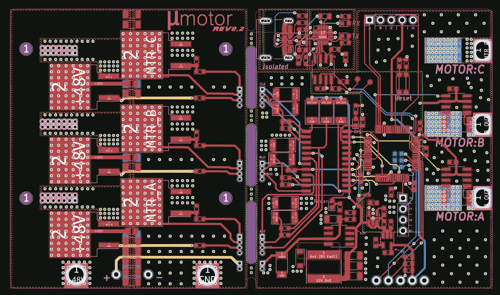
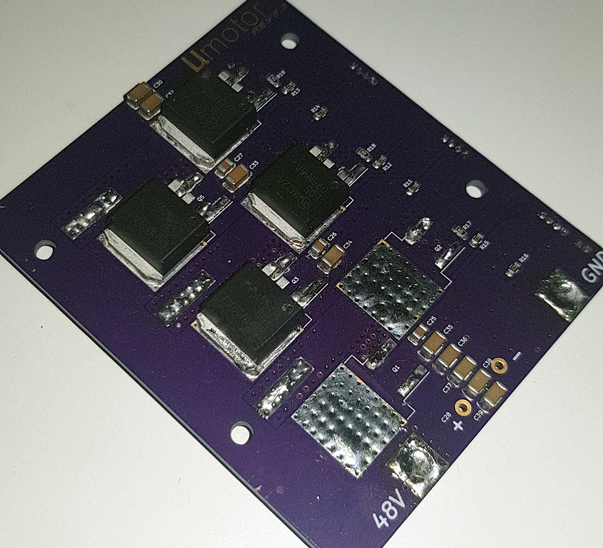
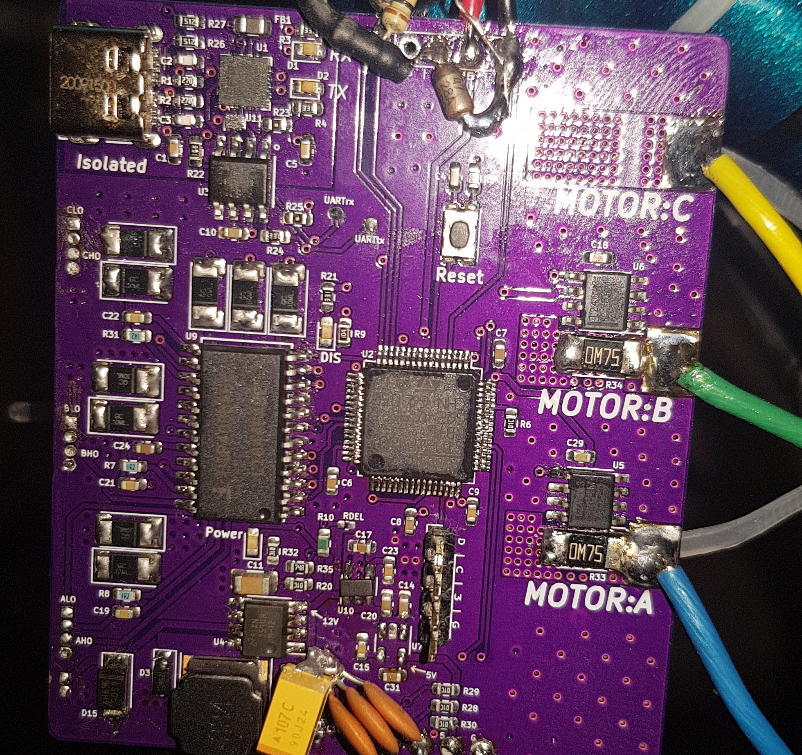
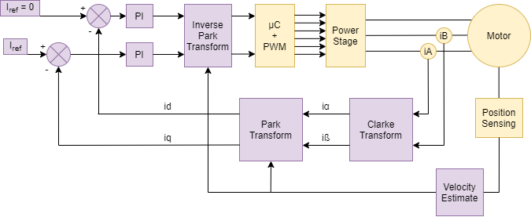
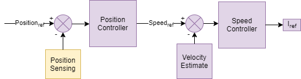
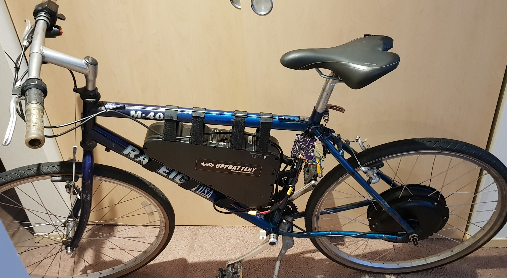

In this project I revisited a previous BLDC motor controller design to incorporate a multitude of enhancements and new features.
The primary goal with this design was to achieve true Field Oriented Control (Vector Control) of a 3-Phase BLDC motor.
The intent of this driver was to power an eBike hub motor and the specifications were chosen accordingly.

- Up to 54 V input supply
- Output current up to 30 A Continuous (50 A Peak)
- Field Oriented Control (FOC)
The circuit card for this design is comprised of two separate boards:
- The power stage (three-phase half-bridge)
- The controller board (everything else)
These boards are connected together, back-to-back, to form a compact stack while keeping the high-power components and traces away from the sensitive digital circuits.
The only exception to this being the feed-through of the three phases which is necessary to perform current sensing.
Power Stage

This inverter stage uses six FDB075N15A N-Channel MOSFETs configured as three half-bridges.
Each FET is rated for 150 V and 130 A with a low on-resistance of 6.25 mΩ. These parts also have a small gate capacitance which is important for controlling turn-on time.
This board also contains all of the gate resistors and snubber capacitors to limit FET switching speed and to suppress voltage transients.
The board pictured here (left) is undergoing repair after both high and low FETs were switched on resulting in large shoot-through current.
This permanently damaged both transistors.
Controller Board

The controller board contains the following:
- ARM Cortex M4 microcontroller (STM32F410)
- Three Phase N-Channel MOSFET Driver (HIP4086)
- Current sensing amplifiers on A & B phases (INA240A3D)
- 60 V -> 12 V switching regulator (LM2594HVM)
- 5 V & 3.3 V linear regulators
- Optically isolated USB-to-UART interface
As you can see in the picture to the left, there are a few changes that will need to be incorporated in the next iteration.
These include a large tantalum capacitor on the 12 V regulator, filter capacitors on the motor hall sensor lines, and a Zener regulator to detect battery connection.
The following is a basic system block diagram of the FOC components.
Where the purple blocks indicate software modules, and the yellow indicate hardware.

This diagram shows the cascade of PID controllers used to control motor torque, speed, and position.
The final output from these controllers is the reference current for the FOC PI controller.
This reference can also be set directly in the case of direct torque control (which is used for the eBike).

Testing of this system was first conducted by powering a small BLDC motor that was directly connected to the OMRON E6D incremental encoder.
This allowed me to test the FOC algorithms at low voltage and power levels.
The 0.015° angular resolution provided by the E6D allowed for very precise speed and position control.
The following video shows the controller in action.
Here, the controller is functioning in position control mode and is commanding the motor to rotate in increments of 360°.

Testing with the eBike started using only a 15 V, current-limited, power supply. Just in case.
The main challenge integrating this system was the lack of a incremental wheel encoder.
Getting a rotary encoder capable of measuring wheel position has proven difficult.
To overcome this I've decided (for now) to just use the Hall-effect position sensors built into the motor.
With these I can roughly measure wheel position and interpolate between them using an estimated wheel velocity. This has proven effective.
The eBike was functional until the rear hub motor torqued itself free from the bike frame.
This cause some lines to short out and destroyed a series of components that I'm attempting to fix now. Part shortages are not helping.
Proper FOC operations requires measuring the current being supplied to each motor phase.
I chose to use a current sense amplifier along with a small shunt resistor to achieve large current measurements without huge power dissipation.
The 750 µΩ shunt resistor will only need to dissipate 675 mW at the most (30 A output),
but I'm just now realizing that this resistor along with the 100 V/V amplifier gain will only allow me to measure up to ±22 A given the 3.3 V ADC reference.
One more thing to update in the next revision.
The largest problem currently facing this project is simply keeping the hub motor attached to the frame!
When the wheel comes loose it can be quite damaging to the rest of the hardware.
The only other pressing issue is the recently discovered limit on the current measurement capability.
It would be nice to have some overhead on this measurement as the PI controllers can get erratic if they have saturated inputs.
1) The 12 V switching regulator should be using a large (100 µF) tantalum output capacitor to avoid ringing.
2) The 5 V linear regulator should be changed to a switching regulator due to power output requirements.
3) Change shunt resistors to 500 µΩ or increase ADC reference voltage so larger currents can be measured.
4) Include 0.01 uF capacitors on Hall sensor inputs to filter noise.
5) Add a firmware controlled status LED.
6) Include additional ADC inputs with divider networks for throttle input.
7) Include a Zener diode to limit input battery voltage for power switch detection.
For the next revision I think I will ditch the board-to-board connectors and simply solder them together with pass-through wires.
The board connectors can be unreliable during high vibration and just add unnecessary cost.
{kind=link}
{kind=link}
{kind=link}
{kind=link}
{kind=link}
{kind=link}
{kind=link}